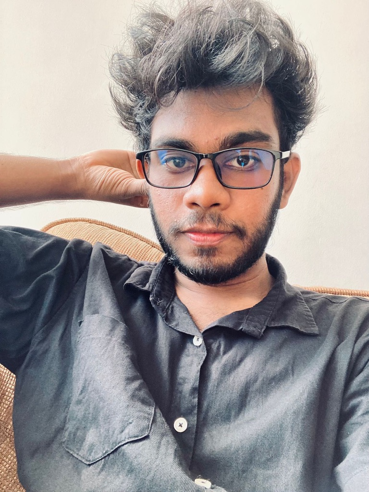

Hello! I’m a Software Engineering student at the
University of Kelaniya, passionate about building the
future with technology. I have a strong interest in Game
Development, Data Engineering, and Cloud-Based Web
Application Development. My goal is to create powerful,
scalable, and innovative solutions that bring ideas to
life.
I have hands-on knowledge in Python, HTML, CSS, and C programming. I am continuously expanding my skills by working on projects, learning new technologies, and strengthening my
understanding of modern development practices.
I enjoy combining creativity with technical expertise to
solve real-world problems and to build applications that are
efficient and impactful.
Currently, I am focused on growing my abilities in cloud technologies, backend development, and game design. I believe in continuous learning, hard work, and never giving up on my dreams. I’m excited to keep moving forward in my journey and to create projects that make a real difference.
Bachelor of Science (Honours) in Software Engineering
University of Kelaniya, Sri Lanka
Expected Graduation: [Your graduation year, e.g., 2026]
Currently pursuing
Relevant coursework: Programming Fundamentals, Web Development, Databases, Software Design, Algorithms